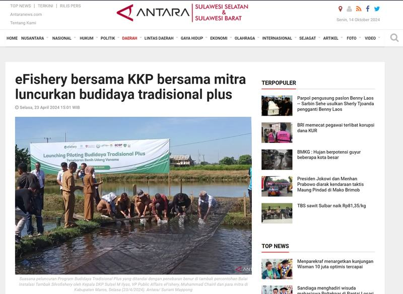
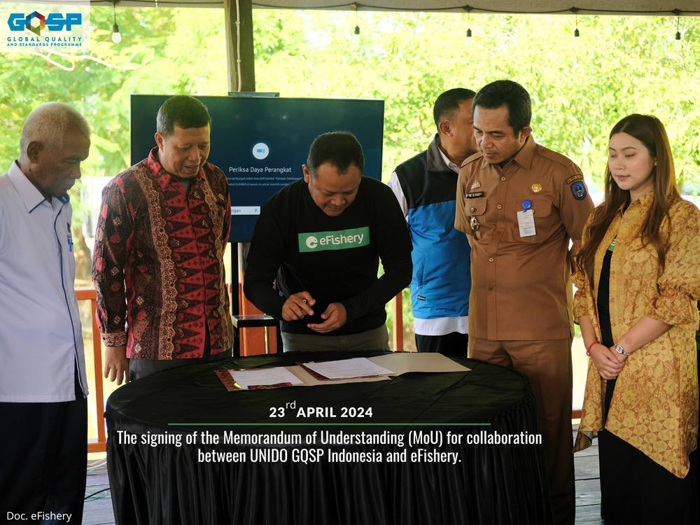
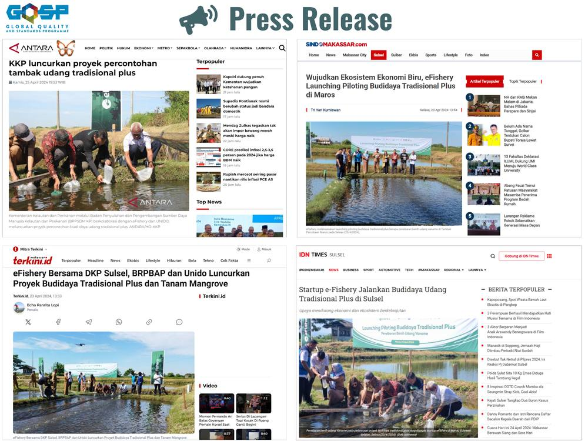

eFishery bersama Kementerian Kelautan dan Perikanan (KKP) dan Mitra Luncurkan Budidaya Udang Tradisional Plus

Maros (ANTARA) - Lembaga eFishery bersama KKP serta jajarannya termasuk para mitra mendorong pertumbuhan ekonomi berkelanjutan di Sulawesi Selatan melalui Proyek Budidaya Udang Tradisional Plus dan penanaman mangrove.
" Ini menindaklanjuti pernyataan Menteri Kelautan dan Perikanan RI, Sakti Wahyu Trenggono yang melansir produksi udang nasional pada 2023 mencapai 1,09 juta ton, sementara target produksi tersebut ditarget meningkat menjadi 2 juta ton tahun ini", kata Kepala DInas Kelautan dan Perikanan (DKP) provinsi Sulawesi Selatan M. Ilyas di Kabupaten Maros, Rabu.
Dia mengatakan, untuk mencapai target itu pemerintah melalui KKP siap membangun tambak udang modern di 12 lokasi di Indonesia sepanjang tahun 2024, salah satunya di Sulawesi Selatan. Berkaitan dengan hal tersebut, KKP siap bersinergi dengan pihak-pihak lain untuk menyukseskan program tersebut.
Berangkat dari hal itu, VP Public Affairs eFishery, Muhammad Chairil mengimbuhkan, eFishery selaku perusahaan teknologi akuakultur asal Indonesia, menyambut baik program modernisasi tambak udang dari KKP.
Jadi hari ini, lanjut dia, eFishery meresmikan proyek budidaya udang tradisional plus di Instalasi Tambak Percobaan Maros, Sulsel bekerja sama dengan DKP provinsi Sulawesi Selatan, Balai Riset Perikanan Budidaya Air Payau dan Penyuluhan Perikanan (BRPBAP3) Maros, serta United Nations Industrial Development Organization (UNIDO) melalui program Global Quality and Standards Programme (GQSP).
Selengkapnya silahkan kunjungi tautan berikut :
Artikel lainnya yang dapat dikunjungi:

